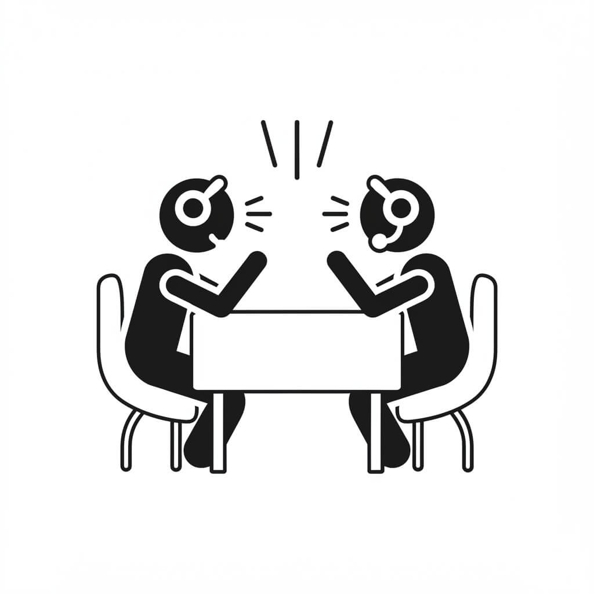

About "あにこみゅ"
「あにこみゅ」は、アニメという共通言語を持つ者たちが集いし、ゆるやかなる雑談を楽しむためのDiscordサーバーである。（…と、ちょっとカッコつけてみました。） 2021年2月16日に産声をあげ、今では多くのアニメ好きが日々ログインしています。
アニメの話はもちろん、「今日こんなことがあった！聞いてくれ！」「このゲーム、時間溶けるんだけど！？」といった魂の叫びから、どうでもいいことまで、自由気ままにおしゃべりしています。
ボイスチャット(VC)での交流もそこそこ活発。聞き専？ むしろ歓迎！ 我々にはテキスト読み上げBotという名の魔法があるのだ！ マイクがなくとも、君の声（テキスト）は届く！ もちろん、テキストチャットだけでも全然OK。推しへの想いをポエムにするも良し、寝落ち報告するも良し。君のペースでどうぞ。
Features - ここがすごいぞ「あにこみゅ」！
実家のような？ ゆるやか雰囲気
ガツガツ系はちょっと…という方、ご安心を。ここは、縁側でお茶をすするような穏やかさと、なぜか落ち着く空間を目指しています。（※ただしお茶はセルフサービスです）
雑談 is FREEDOM!
「あの作画、神！」から「今日の猫、可愛すぎん？」まで、守備範囲は無限大。あなたの脳内ダダ洩れトーク、お待ちしてます。
鉄壁？の安心・安全
無法地帯はNO！ 全員が心穏やかに過ごせるよう、愛と平和のルールブックを完備。荒らし、ダメ、絶対。見つけ次第、管理人が粛清ビームを放ちます（気持ちだけ）。
初心者さん＆ROM専も Come on!
Discord？ 何それ美味しいの？ な方も、VCで喋る？ 無理無理！ な方も、心配ご無用！ 読み上げBot完備、面接なんて都市伝説。さあ、気軽にポチッとな！
こんなキミに告ぐ！ Recommended for You!
- のんびりした雰囲気のサーバーを探している
- アニメに限らず、色々な話題で雑談したい
- 安心して話せる、治安の良い場所が良い
- 作品やキャラへの過度な評論や比較は苦手…
- 面接なしで気軽に参加したい
- VCでわいわい話すのが好き（もちろん聞き専もOK！）
- Discord初心者で、使い方に慣れたい
一つでもチェックが付いたそこのアナタ！ もう「あにこみゅ」に入る運命（さだめ）かもしれない…！
Community Rules - 平和のための掟
みんながニコニコ笑顔で過ごせる銀河系一平和なサーバーを目指して、いくつかお約束があります。まあ、難しいことは言わないんで、目を通してくれると嬉しいな！
-
他者への誹謗中傷や、心を傷つける可能性のある発言（特定のキャラクターや作品に対する一方的・過度な批判も含みます） ※もちろん、「この作品は自分には合わなかった」といった個人的な感想は問題ありません。しかし、「つまらない」「駄作」のような断定的な表現は避け、多様な好みや意見を尊重し合えるコミュニケーションを心がけましょう。
-
連投、スパム行為 落ち着いて！
-
サーバーの趣旨に合わない過度な宣伝や一方的な勧誘行為 じゃない方の世界へどうぞ…
-
その他、コミュニティの輪を乱したり、他のメンバーに著しく不快感を与える行為 空気を読もう！
もっと詳しい銀河法典は、サーバー内の #🔰 | サーバールール チャンネルにて。
困ったことがあれば、遠慮なく正義の味方・管理スタッフまで！ 悪者は成敗してくれるはず！
サーバーの頼れる相棒！ Helpful Bots
MEE6（レベルアップ仙人）
君の発言を見守り、経験値を授けるありがたい存在。気づけばあなたもサーバー古参兵の風格！？
読み上げBot (shovel, 喋太郎, ALBOT)
VC中に届いた君の熱いメッセージを、感情豊か（？）に代弁してくれる働き者たち。マイクがなくたって、君はもう独りじゃない！
さあ、冒険の始まりだ！ Join Our Community!
- Discordアカウントをお持ちでない方は、公式サイトから無料で作成できます。（まずは装備を整えよう！）
- 下のボタンをクリックして、「あにこみゅ」サーバーに参加！（いざ、ダンジョンへ！）
- サーバーに参加したら、まずは
#🔰 | サーバールールチャンネルに目を通してください。（冒険の書を熟読！） #自己紹介チャンネルに簡単な自己紹介を投稿して、気軽に交流をスタートしましょう！（仲間たちとの出会いが待っている！）